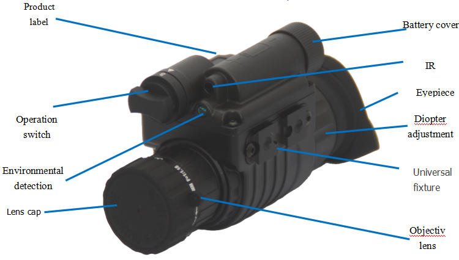

High Quality Night Vision Goggles - Night Vision Monocular with Take Photo/Video Function – Detyl
High Quality Night Vision Goggles - Night Vision Monocular with Take Photo/Video Function – Detyl Detail:
Product features：
DT-NH83X Night Vision Monocular is suitable for camping, fishing, bird watching, scouting games, security and surveillance, search and rescue, camping fun and exploring caves, night navigation, night fishing and boating, wildlife watching and more.
Monoculars,Hunting Night Vision,Infrared Night Vision Monocular Telescope, Monocular Device,Waterproof Night Vision Goggles,Digital Night Vision Monocular

Technical Specifications:
| MODEL | DT-NH823 | DT-NH833 | |
| IIT | Gen2+ | Gen3 | |
| Magnification | 3X | 3X | |
| Resolution | 45-57 | 51-57 | |
| Photocathode type | S25 | GaAs | |
| S/N(db) | 15-21 | 18-25 | |
| Luminous sensitivity(μa-lm) | 450-500 | 500-600 | |
| MTTF（hrs） | 10,000 | 10,000 | |
| FOV(deg) | 15+/-3 | 15+/-3 | |
| Detection distance(m) | 280-350 | 350-400 | |
| Graduation cursor | Internal （optional） | Internal （optional） | |
| Diopter | +5/-5 | +5/-5 | |
| Lens system | F1.3, Ф42 FL=50 | F1.3, Ф42 FL=50 | |
| Coating | Multilayer broadband coating | Multilayer broadband coating | |
| Range of focus | 3M–∞ | 3M–∞ | |
| Auto anti strong light | High Sensitivity, Ultra Fast, Broadband Detection | High Sensitivity, Ultra Fast, Broadband Detection | |
| rollover detection | Solid non-contact automatic detection | Solid non-contact automatic detection | |
| Dimensions (mm) (without eye mask) | 165x69x54 | 165x69x54 | |
| Material | Aviation Aluminum Alloy | Aviation Aluminum Alloy | |
| Weight (g) | 325 | 325 | |
| Power supply (volt) | 2.6-4.2V | 2.6-4.2V | |
| Battery type (V) | CR123A(1) | CR123A(1) | |
| Battery life (hours) | 80(W/O IR) 40(W/IR) | 80(W/O IR) 40(W/IR) | |
| Operating temperature (C | -40/+50 | -40/+50 | |
| Relative humidity | 5%-98% | 5%-98% | |
| Environment rating | IP65（IP67 Optional） | IP65（IP67 Optional） | |
Product detail pictures:


Related Product Guide:
Our primary goal is to offer our clients a serious and responsible business relationship, providing personalized attention to all of them for High Quality Night Vision Goggles - Night Vision Monocular with Take Photo/Video Function – Detyl , The product will supply to all over the world, such as: Kuwait, Philippines, Lisbon, Our R&D department always designs with new fashion ideas so we could introduce up-to-date fashion styles every month. Our strict production management systems always ensure stable and high quality products. Our trade team provides timely and efficient services. If there are any interest and inquiry about our products, please contact us in time. We would like to establish a business relationship with your honored company.
As an international trading company, we have numerous partners, but about your company, I just want to say, you are really good, wide range, good quality, reasonable prices, warm and thoughtful service, advanced technology and equipment and workers have professional training, feedback and product update is timely, in short, this is a very pleasant cooperation, and we look forward to the next cooperation!
Related PRODUCTS
-

New Fashion Design for Flownwing Night Vision G...
-

Best Price on Us Military Binoculars - Univers...
-

Chinese Professional Optical Astronomy - High ...
-
Big discounting Glasses Smart Binoculars - Uni...
-
Quality Inspection for Foldable Binoculars - U...
-
Factory Promotional Telescope Dealers Binocular...